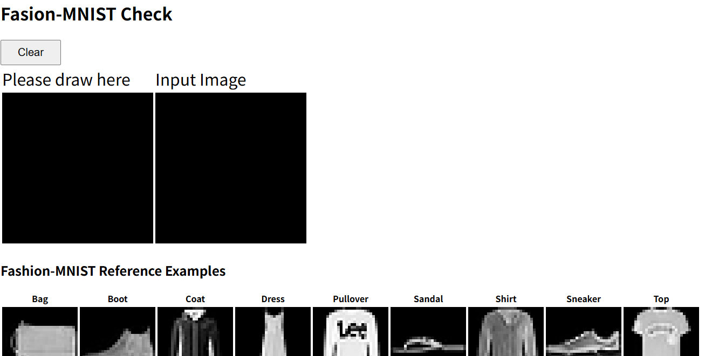
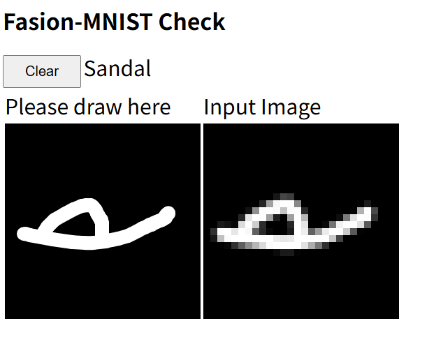

機械学習とウェブへのデプロイ
目標
- ローカルで機械学習を行い、学習済みの重みをウェブアプリケーション向けに変換する
- 変換した重みを使ってウェブアプリケーションの動作確認を行う
- デプロイする
課題1: Fashon-MNISTの学習とデプロイ
MNISTは有名な手書き数字のデータセットだが、数字ではちょっと面白くない。数字の代わりに服やカバン、靴などを認識するデータセット Fashon-MNISTを試してみよう。また、前回はすでに学習済み、ウェブ用に変換済みのデータを使ってデプロイだけを体験したが、今回はPythonによる学習からデータの変換、ウェブへのデプロイまですべて行ってみよう。
Step 1: リポジトリのfork
GitHubにログインした状態で、以下のサイトにアクセスせよ。
https://github.com/cpss2026-git/fashion-mnist-demo
このサイトの右上に「Fork」というボタンがあるので、それを押す。すると「Create
a new
fork」という画面になるので設定はデフォルトのまま「Create
Fork」ボタンを押す。すると、fashion-mnist-demoがforkされ、自分のアカウントのリポジトリとしてコピーされる。
Step 2: リポジトリのクローン
GitHubの自分のアカウントのfashion-mnist-demoをクローンしよう。https://github.com/を開き、Repositoriesから「fashion-mnist-demo」を選ぶ。「Code」ボタンの「Clone」から、リモートリポジトリのURLをコピーしよう。その後、ターミナルで以下を実行することでリポジトリをクローンせよ。
cd
cd github
git clone git@github.com:アカウント名/fashion-mnist-demo.git
cd fashion-mnist-demoStep 3: 仮想環境の構築
仮想環境を構築する。このとき、Pythonのバージョンとして3.11以上が必要となる。もし環境のPythonのバージョンが古い場合は、Pyenvなどで新しいバージョンを入力すること。
ターミナルで以下を実行せよ。
python3 -m venv .venv
source .venv/bin/activate
python3 -m pip install --upgrade pip
python3 -m pip install tensorflow tensorflowjsMacの場合は、python3.11を使って仮想環境を作ってもよい(pyenvを使ってもよい)。
python3.11 -m venv .venv
source .venv/bin/activate
python3 -m pip install --upgrade pip
python3 -m pip install tensorflow tensorflowjs仮想環境をアクティベート後は、python3を指定すればよい。
Step 4: 訓練
データセットの読み込みとモデルの学習をさせてみよう。以下を実行せよ。
python3 train.py実行後、以下のような出力がされたら実行に成功している。なお、数字の詳細は環境によって異なる。
Epoch 1/5
1875/1875 ━━━━━━━━━━━━━━━━━━━━ 3s 1ms/step - accuracy: 0.8266 - loss: 0.4958 Epoch 2/5
1875/1875 ━━━━━━━━━━━━━━━━━━━━ 2s 1ms/step - accuracy: 0.8658 - loss: 0.3749
Epoch 3/5
1875/1875 ━━━━━━━━━━━━━━━━━━━━ 2s 1ms/step - accuracy: 0.8769 - loss: 0.3376
Epoch 4/5
1875/1875 ━━━━━━━━━━━━━━━━━━━━ 2s 1ms/step - accuracy: 0.8852 - loss: 0.3126
Epoch 5/5
1875/1875 ━━━━━━━━━━━━━━━━━━━━ 2s 1ms/step - accuracy: 0.8916 - loss: 0.2939
313/313 ━━━━━━━━━━━━━━━━━━━━ 0s 878us/step - accuracy: 0.8716 - loss: 0.3586
Test accuracy: 0.8715999722480774
Model was saved.コード実行後、model.kerasというファイルが作成されている。これが学習済みモデルを保存したファイルである。
Step 6: 学習テスト
正しく学習できたか確認してみよう。以下を実行せよ。
python3 check.pyこれは、学習に使っていない100個のデータについて、学習済みモデルに分類させ、正解か不正解かチェックを行って、何個正解したかを表示するものだ。例えば、以下のような結果が出力される。
0: true=Boot pred=Boot Correct
1: true=Pullover pred=Pullover Correct
2: true=Trouser pred=Trouser Correct
(snip)
98: true=Coat pred=Coat Correct
99: true=Pullover pred=Pullover Correct
Accuracy: 86/100 = 86.00%この例では、100個中86個正解、すなわち正解率86%であった。
Step 5: 変換
Pythonで学習したモデルmodel.kerasを、JavaScript
(正確にはTensorFlowJS)向けに変換しよう。まず、モデルの内容をエクスポートする。以下を実行せよ。
python3 export.pyこれにより、model.kerasから、exportディレクトリが作成される。
さらに、このディレクトリからJSONを作成する。以下を実行せよ。
tensorflowjs_converter export docs/modelこれにより、exportディレクトリの内容から、docs/modelにmodel.jsonとgroup1-shard1of1.binが作成される。
なお、setuptoolsのバージョンによっては、以下のようなエラーが起きる場合がる。
Traceback (most recent call last):
File "/home/watanabe/github/fashion-mnist-demo/.venv/bin/tensorflowjs_converter", line 3, in <module>
from tensorflowjs.converters.converter import pip_main
File "/home/watanabe/github/fashion-mnist-demo/.venv/lib/python3.12/site-packages/tensorflowjs/__init__.py", line 21, in <module>
from tensorflowjs import converters
File "/home/watanabe/github/fashion-mnist-demo/.venv/lib/python3.12/site-packages/tensorflowjs/converters/__init__.py", line 21, in <module>
from tensorflowjs.converters.converter import convert
File "/home/watanabe/github/fashion-mnist-demo/.venv/lib/python3.12/site-packages/tensorflowjs/converters/converter.py", line 38, in <module>
from tensorflowjs.converters import tf_saved_model_conversion_v2
File "/home/watanabe/github/fashion-mnist-demo/.venv/lib/python3.12/site-packages/tensorflowjs/converters/tf_saved_model_conversion_v2.py", line 51, in <module>
import tensorflow_hub as hub
File "/home/watanabe/github/fashion-mnist-demo/.venv/lib/python3.12/site-packages/tensorflow_hub/__init__.py", line 85, in <module>
_ensure_tf_install()
File "/home/watanabe/github/fashion-mnist-demo/.venv/lib/python3.12/site-packages/tensorflow_hub/__init__.py", line 61, in _ensure_tf_install
from pkg_resources import parse_version
ModuleNotFoundError: No module named 'pkg_resources'これは、setuptoolsのバージョンが新しすぎることが原因なので、setuptoolsを一度アンインストールし、バージョン80.9.0ををインストールすればよい。
python3 -m pip uninstall setuptools
python3 -m pip install "setuptools==80.9.0"その後、もう一度tensorflowjs_converterを実行すればよい。
Step 6: VS Codeの起動
VS
Codeの「フォルダーを開く」から~/github/fashion-mnist-demoを開く。その後、VS
Codeでdocs/index.htmlを表示している状態で、右下の「Go
Live」をクリックして、Live
Serverを立ち上げる。以下のような画面が表示されるはずである。

このうち、左の「Please Draw here」にマウスで絵が描ける。それを28x28ピクセルにしたものが右の「Input Image」であり、これがモデルに入力される。
何か絵を描くと、モデルがそれを何であるかを判断する。

例えば、上記は、サンダルと判断されている。
画面の下に、各クラス10個ずつデータセットのサンプルがあるので、すべてのクラスが表示されるように試してみるとよいだろう。
終わったらLive Serverを終了する。VS Codeの右下の「Go Live」があったところに「Port: 5500」とあるので、そこをクリックする。
Step 7: 学習済みモデルの追加
先ほど学習したモデルの返還後の重みをGit管理しよう。以下を実行せよ。
git add docs/model
git commit -m "adds model"
git pushStep 8: Pagesの設定
先ほどと同様な手順で、GitHub
Pagesを公開しよう。GitHubの自身のfashon-mnist-demoリポジトリを開いてから、以下を実行せよ。
- 上のタブの「Settings」を選ぶ。
- 左のメニューから「Pages」を選ぶ。
- 「GitHub
Pages」という画面になるので、「Source」は「Deploy from
a
branch」のまま、「Branch」が「None」となっているのでボタンをクリックし、
mainを選ぶ。 - 「
/root」というボタンが現れるので、クリックして「/docs」を選んで「Save」ボタンを押す。
そのまま数分待ってから、その画面をリロードしよう。
準備ができていれば
Your site is live at https://ユーザ名.github.io/fashion-mnist-demo/という表示がされる。表示されたら、その表示の右にある「Visit site」ボタンを押すこと。Fashon MNISTの分類テストデモがブラウザで実行されるはずである。